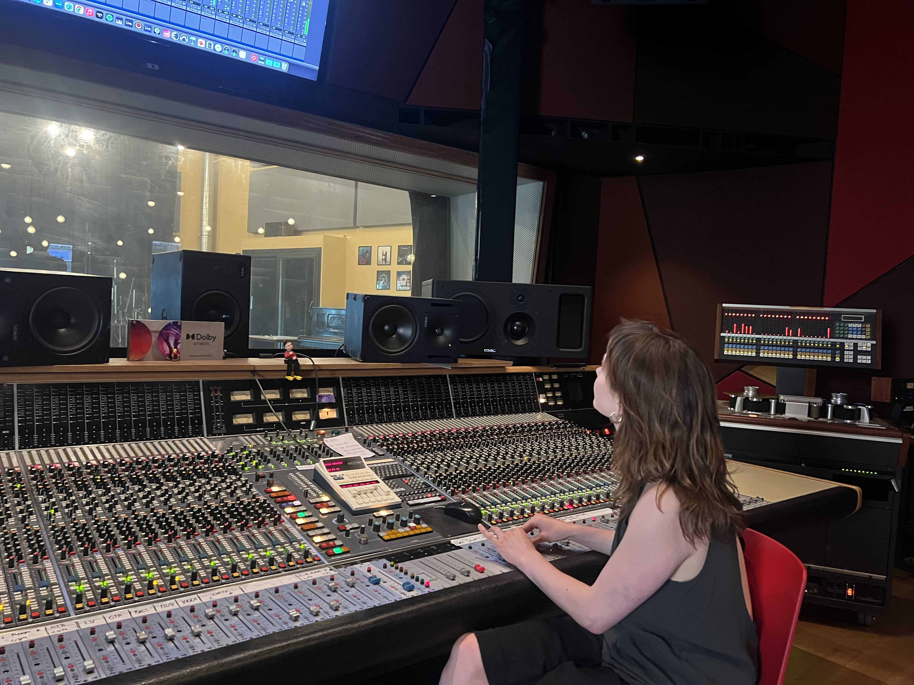

Erik Magnifico
Recording Engineer • Mixing Engineer • Music Producer
Abbey Road Institute Amsterdam

Work
Instrument in development
Upright Piano VST
A sampled instrument built from an upright piano, captured in detail across the strings, action and body for an intimate, tactile sound.
Sampling · Recording · Editing · Instrument Design
Available soon · Join the list ↗Interface previews and playable audio demos are coming as development continues.



Dorsy — Studio Recording
Analogue studio recording project developed around an organic, performance-focused approach.
Production · Recording · Neve VR Legend · Studer Tape


Suite Spot Concerts
Live recording project capturing intimate performances in unique spaces.
Recording · Mixing · Production


Paradiso Sessions
Live recording sessions at Paradiso Amsterdam.
Recording · Mixing · Engineering
Additional Work
Tony Pitony
Recording Assistant
Assisted during recording sessions, supporting microphone setup, studio workflow, and technical preparation.
Relatief
Recording Assistant
Assisted with recording sessions, helping with setup, routing, and general studio workflow.
Various Sessions
Studio Assistant
Additional recording and production sessions involving setup, editing, and technical support.
About
With a background in classical violin and experience on piano, guitar and keys, Erik brings a musician's perspective to every recording session.
His approach combines technical precision with an understanding of performance, arrangement and collaboration.
Education
Abbey Road Institute Amsterdam
Music Production & Audio Engineering
2025–2026
Additional Training
Dolby Atmos Music
Avid Pro Tools Certification
Apple Digital Masters Workflow
Technical Experience
Analogue
Neve VR Legend
SSL 8000 G
Studer Tape
Digital
Pro Tools
Ableton Live
Logic Pro
Recording
Studio
Location
Live Sessions